New Operaism
Cyborg Ecologies For The Post-Anthropocene
Abstract
Thesis Advisors: Eva Castro & Federico RubertoNew Operaism explores new ways that humans can operate within the deepening Anthropocene, challenging the ontological positions that take for granted a benevolent nature. The project is a speculative fiction that envisions a new form of territorial life, one that seeks to inhabit the uninhabitable. Given the vulnerability of coastal waste infrastructures, the project attempts to transform a drowning landfill at the mercy of climate change into a thriving post-material community.
Examining the starting and ending points of the global trans-boundary electronic waste flow, the vulnerable communities living in close proximity to the landfill begin to occupy their new aquatic territory by processing the landfill and trans-boundary electronic waste into building materials, aquaculture and energy systems, augmenting the natural and synthetic systems into a cyborg ecology.
A society established from urgency, the exploited labourers project themselves into an alternate reality, one in which they gain full autonomy by harnessing the power of technology to move into a post-labour future.
About Me
Ian is student at the Singapore University of Technology and Design, pursuing his Masters degree in Architecture. Prior to his masters, Ian has interned both locally and abroad. He is optimistic that in the not so distant future, AI and bots will render the task of writing autobiographies (such as this one) obsolete.
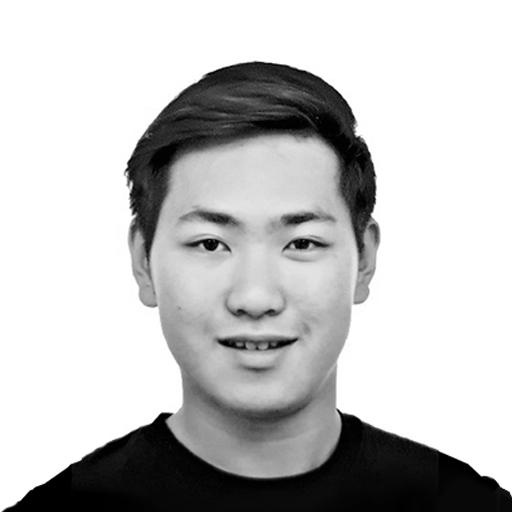
Name
Ian Soon
Mentor
Eva Castro
Typology
Speculative Futures,
Inhabitable Oceans, Micro-Macro Strategies
Site Location
Gulf Of Thailand,
Southeast Asia

![]()
![]()
![]()

Anthropocentric Emergencies
Acknowledging that the climate crisis is unstoppable, New Operaism aims to search for new kinds of hybridized natures that mankind may wish to inhabit to carry us through the Anthropocene.The project examines the byproducts of the human age (discarded waste) and its spatial impacts on communities, with an emphasis on the world’s fastest growing waste stream: electronic waste.
Southeast Asia is the main focus of the project as e-waste is frequently mislabeled as scrap and exported to countries within the region to be processed by informal, low-wage labourers.
“If nature is unjust, change nature.” – XF manifesto
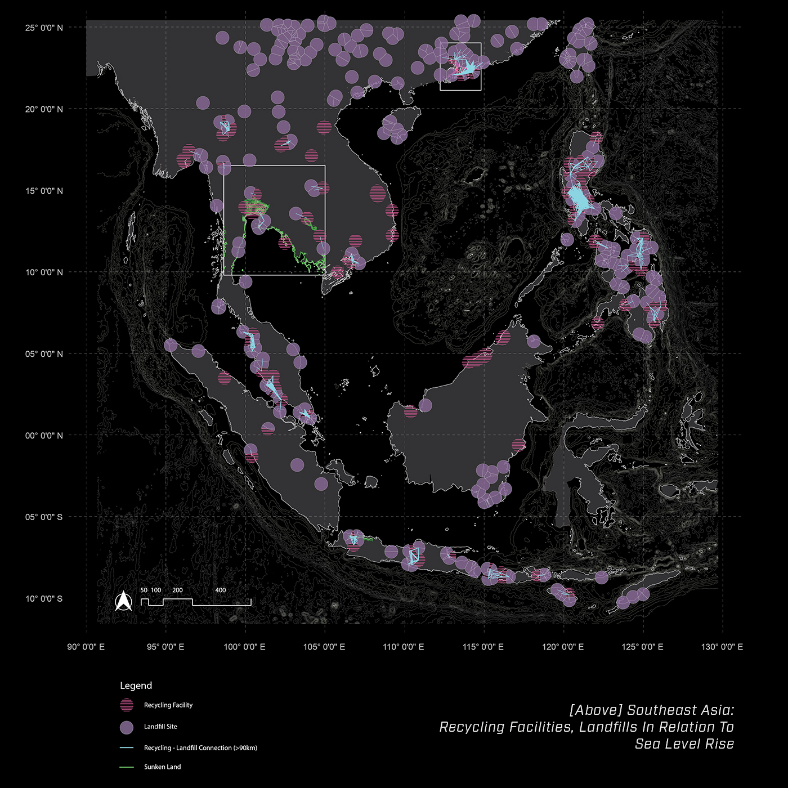 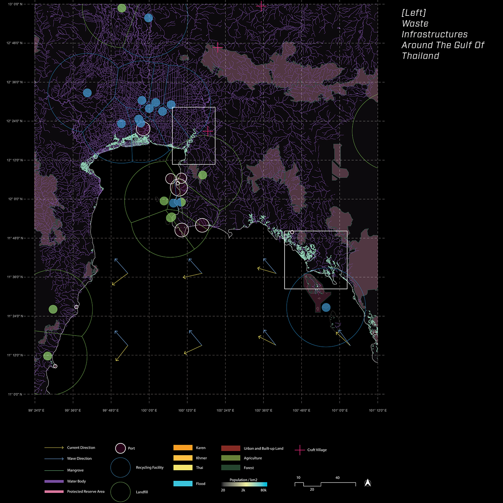
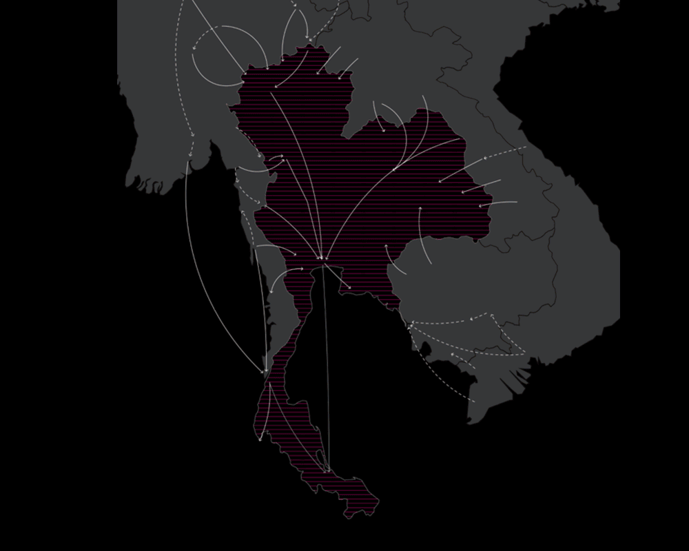
Most of these recycling infrastructures are adjacent to coastal areas, making them vulnerable to sea level rise. Their close proximity to agricultural areas also poses a threat to the livelihood of the region. Thailand is the world’s leading exporter of rice and an agriculturally intensive country, and is currently facing the threat of sea level rise. The Bangkok metropolitan area will be submerged as early as 2030, and thus it is crucial to examine the unprotected waste and recycling infrastructures from the rising sea levels as a potential threat.
Drowning Coastal Waste Infrastructures & Undocumented Workers
The country in focus is Thailand, a major importer of transboundary electronic waste. The industry is operated by low wage, informal workers. Most of the workers are undocumented workers from neighboring countries.Most of these recycling infrastructures are adjacent to coastal areas, making them vulnerable to sea level rise. Their close proximity to agricultural areas also poses a threat to the livelihood of the region. Thailand is the world’s leading exporter of rice and an agriculturally intensive country, and is currently facing the threat of sea level rise. The Bangkok metropolitan area will be submerged as early as 2030, and thus it is crucial to examine the unprotected waste and recycling infrastructures from the rising sea levels as a potential threat.
Growing Aquatic Territory
Ticking Time Bombs: Projective Indexing Of Landfills And Sea Level Rise
 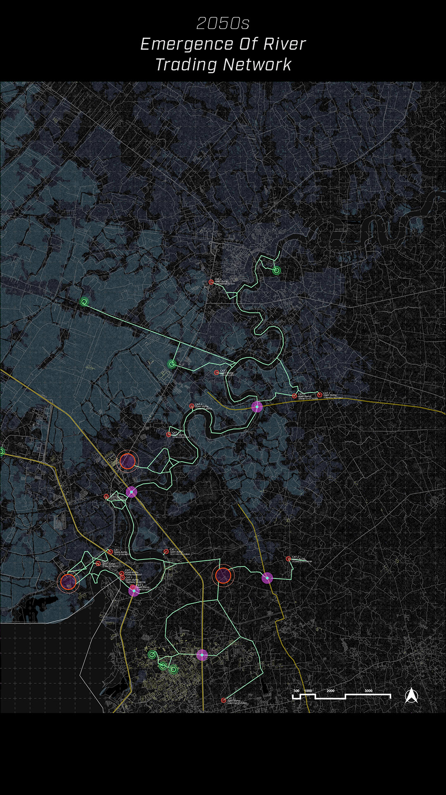
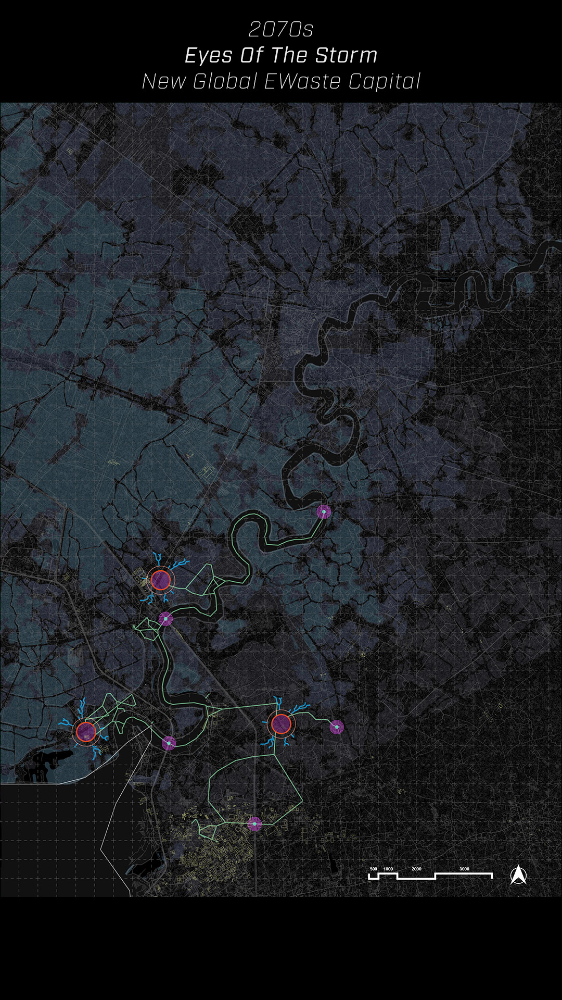
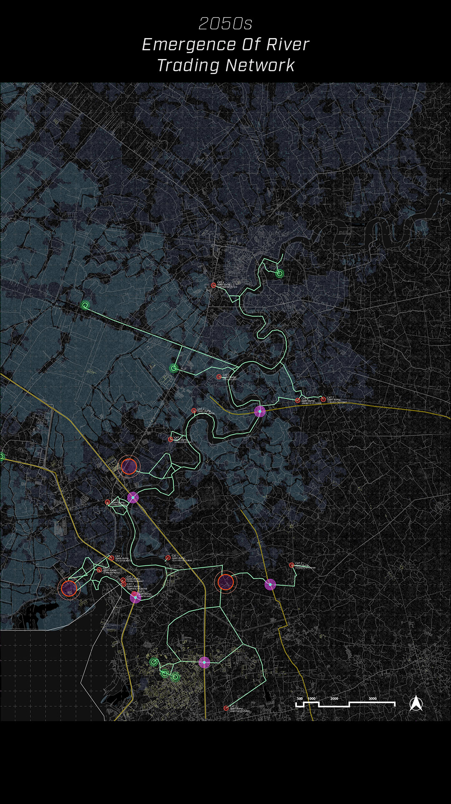
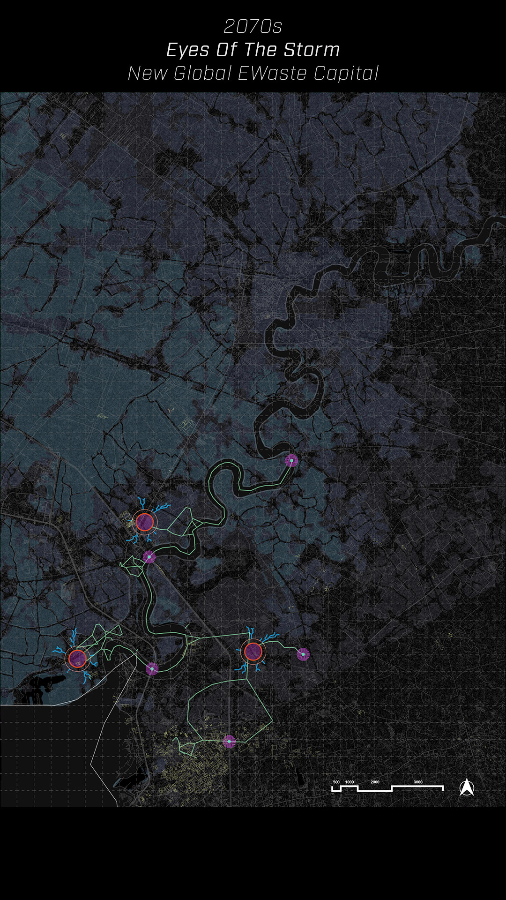
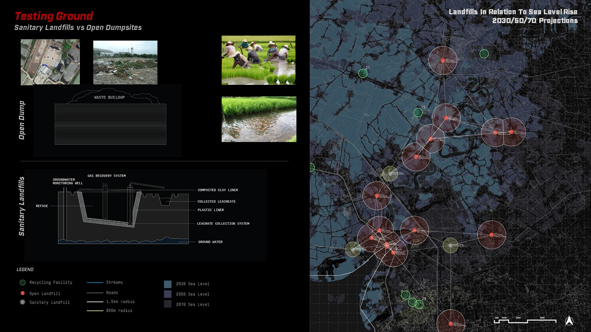
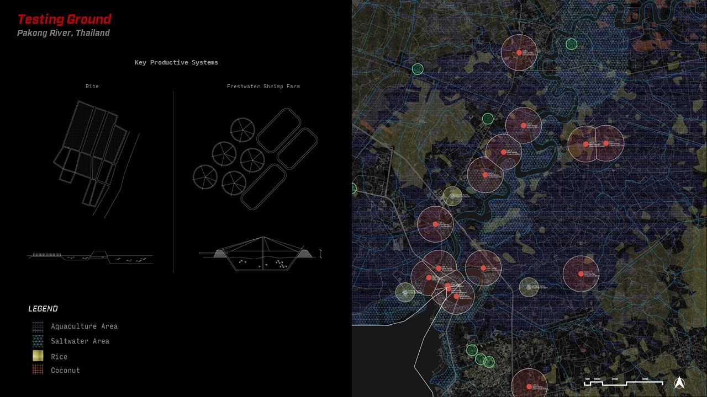
Developing Hybrid Infrastructures From Discrete Tectonics
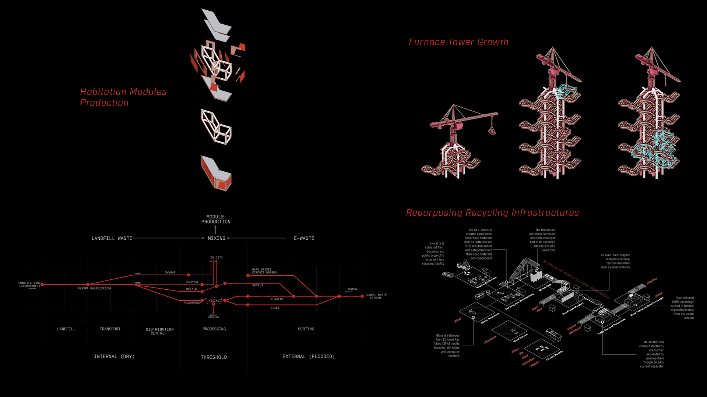

Alternate Futures: The Fiction Of Autonomy
“Science fiction is the realism of our time.” -Kim Stanley Robinson
Given the failure of the abovementioned conditions, how do we design an unknown future for the alienated?
Utilizing world-building and fiction, the project examines the trajectory of current issues and projects the exploited worker into an alternate future. As a contextual brief for the project, a fictional narrative was developed based on current global issues relating to the climate crisis.
The story is told through the lens of Keo, a Cambodian migrant working in the dangerous electronic waste industry in Thailand. Leveraging on technology and hybridized infrastructures, the fictional narrative projects the exploited workers into emancipated individuals living together in a post-labour community in an aquatic territory.
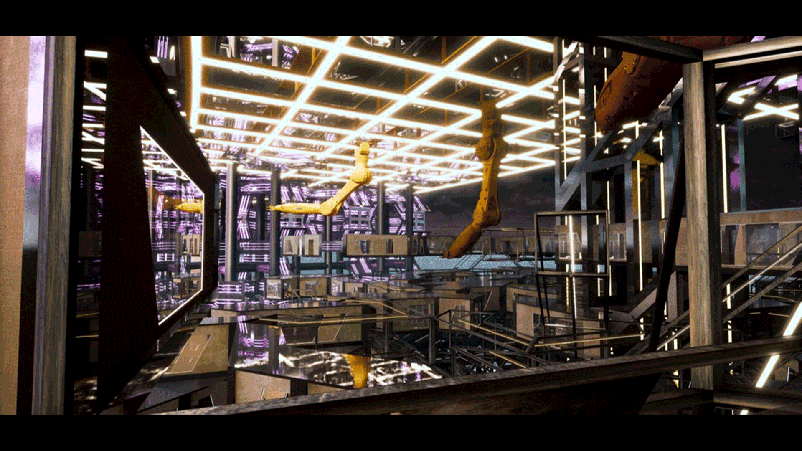
Emancipation From Labour
By crafting a fiction based on the constitutive elements of the current socio-political and climate crisis, the project moves into the speculation and inventions of other futures, challenging ideas relating to labour and technology.As a further extension, the project invites us into deeper forms of speculation of a world in technological hyper-acceleration and seeks to delineate the idea of social activities in a post-labour world.
Taking reference from Aaron Baastani’s Fully Automated Luxury Communism, different social activities are posited in the form of common spaces above the habitation deck. Due to its discrete tectonics, these social spaces can be taken apart and re-assembled to reflect the on-demand nature of a fully automated society.
A trans-human society established from urgency, the exploited labourers project themselves into an alternate reality, one in which they gain full autonomy by harnessing the power of technology to move into a post-labour future.
Section: From Landfill To A Thriving Post-Material Aquatic Community
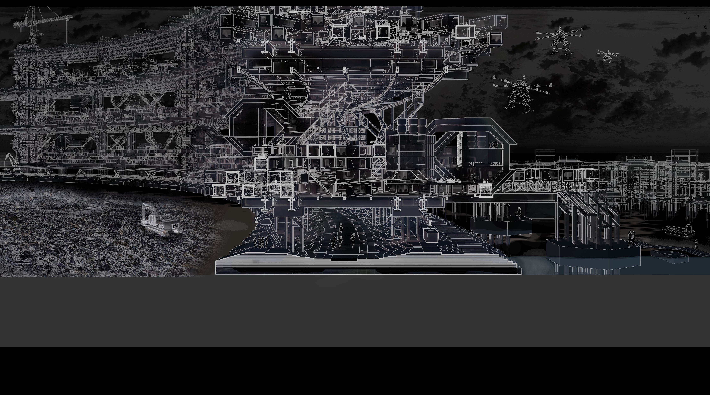